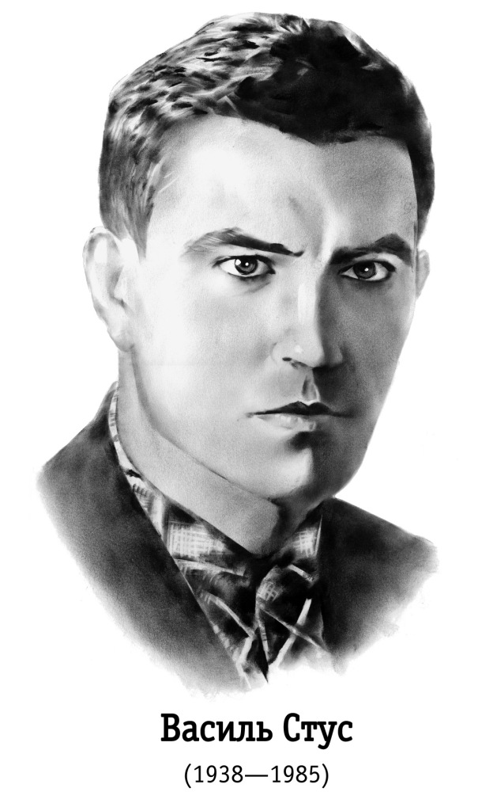

Вітаємо!
Цей сайт присвячений творчості Василя Стуса

Коротко про Василя Стуса
Васи́ль Стус — український поет, перекладач, правозахисник, один із найвизначніших діячів
українського дисидентського руху. Народився 1938 року на Вінниччині. Активно виступав проти радянської цензури й переслідувань, за що був двічі засуджений. Значну частину життя провів у таборах і на засланні. Помер у таборі особливого режиму в Пермській області 1985 року. Стус став символом незламності, свободи духу та боротьби за права людини. Його поезія глибока, емоційна, сповнена філософських мотивів і любові до України.